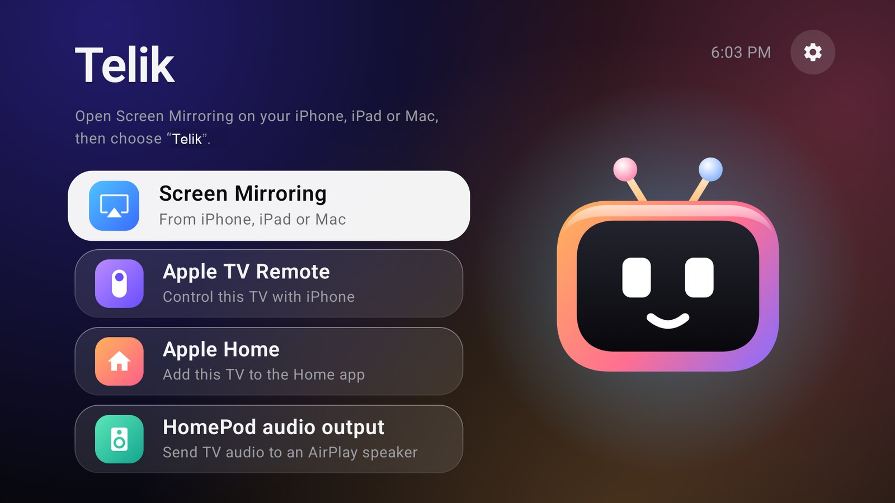

The real Apple TV Remote
Touch area, click, back, TV button, play and pause from Control Center. Nothing to install on the iPhone.

Telik puts your Android TV in the iPhone Control Center remote list. Swipe, click, type with the iPhone keyboard, mirror over AirPlay and use Apple Home. Everything runs on the TV.
Free and open source, GPL-3.0. Android TV 13+, 32-bit ARM builds.

Touch area, click, back, TV button, play and pause from Control Center. Nothing to install on the iPhone.
Focus a text field on the TV and type on the phone, Cyrillic included. Works in fields that use the standard Android input. Apps that draw their own on-screen keyboard may not respond.
Mirror an iPhone, iPad or Mac screen and send sound to the TV. Based on UxPlay.
The TV gets a tile in the Home app with power and app inputs, so scenes and Siri commands can use it.
No Homebridge, Raspberry Pi or Termux. The services start by themselves after the TV boots.
The APK is about 11 MB and written for low-end TV hardware.
telik-*-armv7.apk from Releases and install it on the TV. adb install works, and so does a file manager.| Task | With Telik |
|---|---|
| Navigation, volume, pause from the iPhone | Works |
| Text input from the iPhone | Works in standard Android text fields |
| Screen mirroring | Works through the AirPlay legacy protocol, tested on iOS 27.2 |
| Apple TV+, Netflix over AirPlay | Not supported. Use their apps on the TV |
| The real Siri on the TV | Not available. The side button starts Android voice search |
| Turning the TV on from the iPhone | Depends on whether the TV keeps its network in standby |
Yes. Telik makes the TV appear in the Apple TV Remote list. Pair once with the code on the TV screen.
No. Telik does not decrypt protected video. Open those services in their own apps on the TV and control them from the iPhone remote.
No. The app runs on the TV without root, a server, Homebridge or an iPhone app.
Tested on a 32-bit Dahua 4K TV with Android 14 and an iPhone on iOS 27.2. Other Android TV 13+ models should work, and reports are welcome in the issue tracker.
The source is public. Accessibility access lets the app operate the TV, so install only builds you trust. Telik has no analytics and does not need an account.